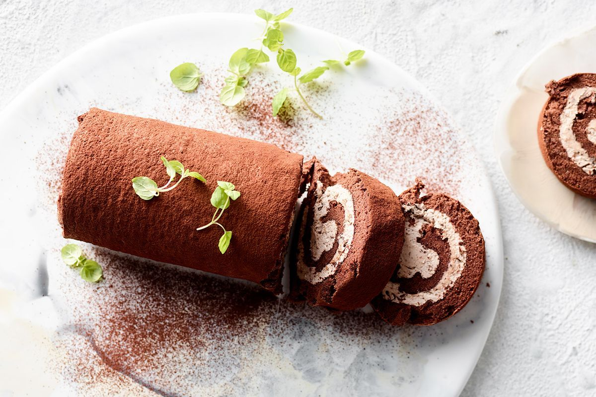

This chocolate Swiss roll is a simpler and smaller version of Beth Le Manach's bûche de Noël. It takes time but is worth the effort.
Cake:
Filling:
Preheat the oven to 325 degrees F (165 degrees C). Spray a jelly roll or rimmed sheet pan with cooking spray and line with parchment paper.
Make cake: Sift flour, cocoa powder, salt, and baking soda together in a medium bowl.
Beat eggs and sugar in a large bowl with an electric mixer on high speed until tripled in volume, about 5 minutes. Mix in vanilla. Beat in flour mixture on low speed in thirds, alternating with melted butter, until just combined. Pour into the prepared pan (the thickness should be less than 1/4 inch).
Bake in the preheated oven until a toothpick inserted into the center comes out clean, 8 to 9 minutes. Allow to cool completely.
Flip cake upside-down out of the pan onto a new sheet of parchment paper. Remove the used parchment paper gently from the top of cake. Roll cake, starting at one end of the paper, into a tube until it is completely rolled into the parchment. Refrigerate for 2 hours.
Make filling: Whip cream, powdered sugar, and vanilla together in a bowl with an electric mixer until medium peaks form. Mix in chocolate-hazelnut spread until well combined.
Unroll cake and spread evenly with filling. Roll up cake with filling, keeping in mind that cake might crack or tear easily. Dust with cocoa powder if you like.

If you have leftover filling, add it to the cut slices of cake when serving.
You can use a bread knife to cut the cake to make sure it won't squeeze while cutting.